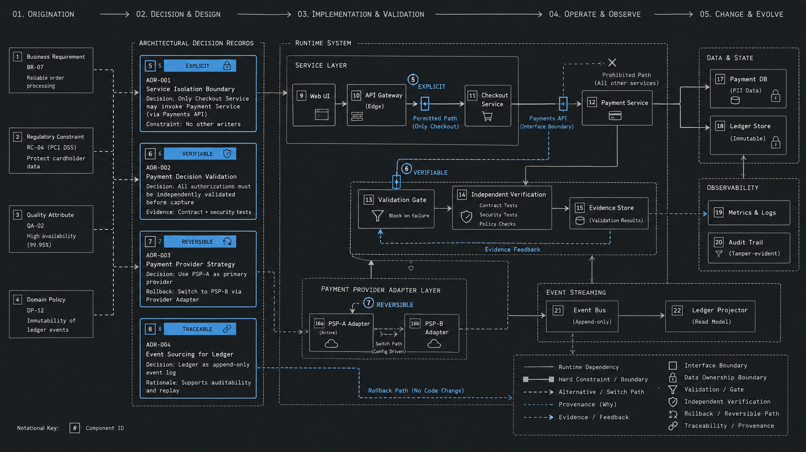
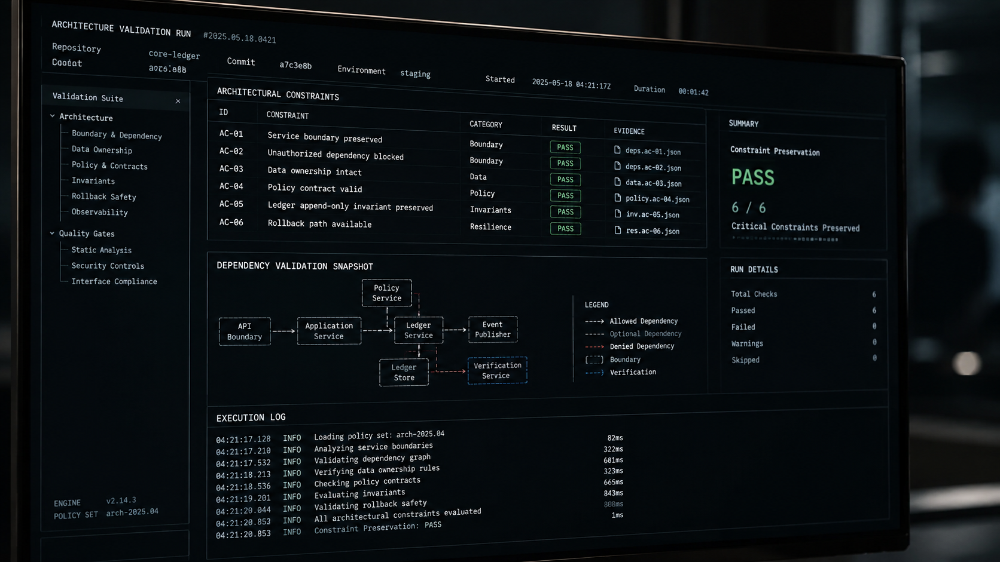

virtualmase
virtualmaseThe scarce skill is deciding what must stay true.
Engineering judgment in AI-assisted software development was never about reading more code. It is about preserving the constraints, evidence, reversibility, and ownership that decide whether a system survives its next change.
A team can now ship more code, in less time, while trusting it less. That is not a paradox. It is evidence that the limiting factor in software development is moving away from implementation and toward decision quality.
In the 2025 Stack Overflow Developer Survey, 46% of respondents who answered the trust question said they distrust the accuracy of AI tools, compared with 33% who trust them. The same survey found that “almost right” AI answers were developers’ most common frustration. Google’s 2025 DORA research reports near-universal workplace adoption—90% of technology professionals use AI—and more than 80% perceive productivity gains. Yet DORA’s follow-up analysis says 30% report little or no trust in AI-generated code.
Adoption, perceived speed, and trust are moving on different tracks. That makes engineering judgment in AI-assisted software development a practical operating concern, not a philosophical side quest.
The bottleneck moved from producing code to choosing consequences
Anthropic’s analysis of 500,000 coding interactions found that 79% of Claude Code conversations were classified as automation, versus 49% for Claude.ai. The study describes what people delegated during one week in April 2025; it does not establish whether the resulting software was useful, maintainable, or correct. That limitation is the point. We have increasingly rich telemetry for generation and relatively poor telemetry for whether a generated change was the right change.
Controlled studies show why context matters. GitHub reported a randomized study of 202 experienced developers in which Copilot-assisted participants produced code that scored better on functionality, readability, reliability, maintainability, and conciseness for a bounded API exercise. Earlier GitHub research found developers completed a similarly bounded JavaScript task up to 55% faster.
METR tested a very different environment: 16 experienced open-source developers completed 246 real tasks in mature repositories they knew well. Its early-2025 randomized trial found AI-allowed tasks took 19% longer, even though participants believed AI had made them faster. METR explicitly warned that this sample did not represent all software work. In a February 2026 update, the researchers said newer tools likely produce more acceleration, while selection effects made the size of that improvement uncertain.
Automation helps differently across different tasks. The less bounded the problem and the more system history it carries, the more consequential the surrounding judgment becomes.
Cheap implementation also changes which ideas survive. When an internal service cost engineering weeks, weak ideas often died from expense. An agent can now produce the speculative abstraction or unnecessary dashboard in an afternoon. It may run. It may even be clean. None of that makes it worth owning.
Engineering judgment is disciplined reasoning, not senior intuition
Judgment is often treated as the private instinct of a senior engineer. That framing makes it difficult to teach, review, or improve. A more useful definition is disciplined reasoning under uncertainty.
It includes framing the actual problem, separating requirements from assumptions, comparing viable alternatives, recognizing irreversible choices, calibrating confidence, estimating blast radius, seeking disconfirming evidence, and changing course when the evidence changes.
Those abilities are examinable. A decision can show its work. That is why the virtualmase AI Mastery learning system treats engineering judgment as a practiced capability, and why the software project lifecycle skills begin with the smallest useful test instead of a full build.
Kief Morris describes a compatible model in Humans and Agents in Software Engineering Loops: people manage the “why loop,” while agents can increasingly operate inside “how loops.” The valuable human position is not necessarily checking every generated line or disappearing from the process. It is being on the loop—designing and maintaining the goals, constraints, tests, and feedback that shape the work.
Ask one question before, during, and after every consequential change
What must stay true?
Before implementation: what must remain true for this to still be the system people depend on? During implementation: what evidence would show that it remains true? After implementation: what must the next engineer—or agent—understand before changing it again?
The answers are system-specific, but they often look like these:
- Authentication must fail closed.
- A retry must not execute a non-idempotent operation twice.
- A migration must remain reversible until production validation is complete.
- One service must retain mutation authority over one sensitive dataset.
- A dependency must justify the operational surface it adds.
- A local change must not silently overload an unrelated system.
This question turns a vague review into an explicit contract. For work with meaningful external consequences, the virtualmase Action Boundary Brief for AI systems records scope, access, limits, oversight, and stop conditions before action begins. It is a compact way to make “what must stay true” visible before implementation momentum makes the decision feel inevitable.

The four properties of a durable engineering decision
A durable decision is not one that never changes. It is one that can survive scrutiny and change deliberately. Four properties make that possible.
1. Explicit: state the protected constraint
“We chose this architecture” carries almost no reusable information. “Only the checkout service may mutate payment state because it owns the authorization invariant” names the boundary, rationale, and condition under which the decision should be revisited.
Prompts and generated diffs rarely create this sentence reliably because implementation does not force anyone to explain why the implementation should exist. The team has to make the constraint a first-class artifact.
2. Verifiable: define evidence, not reassurance
A decision needs a test, metric, invariant, policy gate, or observable production behavior that can reveal whether it still works. Local code quality is part of that evidence, but it is not the whole system. A clean function can introduce the wrong dependency. A passing test suite can coexist with architecture drift.
Verification therefore asks two questions: does this change work locally, and does the decision beneath it still protect the system?
3. Reversible: price the path back
Reversibility does not mean every choice is easy to undo. It means the team knows the migration cost, dependencies, blast radius, and rollback path. A data migration or service-ownership decision does not become reversible because an agent generated its implementation quickly.
The harder a decision is to reverse, the more evidence it deserves before implementation. This is also why a traceable AI Change Record includes validation, monitoring, ownership, and recovery rather than stopping at “what changed.”
4. Traceable: leave the reasoning beside the work
A future maintainer should be able to reconstruct why the decision exists, which alternatives were rejected, and what would invalidate it. Michael Nygard’s original architecture decision record proposal remains useful because it is lightweight: one short, versioned record with context, decision, status, and consequences.
Architecture decision records are not a paperwork layer. A good ADR is a compact conversation with a future engineer. It should preserve the forces behind a decision without pretending the decision is permanent.
| Property | Question | Useful artifact |
|---|---|---|
| Explicit | Which constraint produced this choice? | Decision statement |
| Verifiable | What evidence would show failure? | Test, metric, invariant, monitor |
| Reversible | What is the path and cost to undo it? | Rollback or migration plan |
| Traceable | Can a future maintainer recover the reasoning? | ADR and change record |
AI-generated code can move debt out of the code and into the team
Technical debt describes implementation choices that make a system harder to change. Faster generation does not remove it, but it introduces two adjacent failure modes that code-quality metrics can miss.
In From Technical Debt to Cognitive and Intent Debt, University of Victoria researcher Margaret-Anne Storey distinguishes three layers of software health:
- Technical debt lives in code and limits how a system can change.
- Cognitive debt accumulates as shared understanding erodes and limits how a team can reason about change.
- Intent debt accumulates when goals, constraints, and rationale are not captured in durable artifacts.
The distinction echoes Peter Naur’s 1985 paper Programming as Theory Building: programming is not merely text production; maintainers build a working theory of how the problem and solution fit together. Generated code can expand the text while the team’s theory shrinks.
This is the central risk in AI-generated code review. A team can inspect syntax, tests, and style while missing the fact that nobody can explain why the change belongs, which invariant it protects, or how it alters ownership. The problem is not simply bad code. It is unowned consequence.
Move machines toward verification and humans toward consequence
Reading every line produced by coding agents will not scale. The practical response is to automate what can be checked deterministically and reserve human attention for decisions a deterministic check cannot make.
Types, tests, static analysis, dependency rules, security scans, policy checks, deployment gates, and production monitors can all reduce review load. Architectural boundaries can also become executable. Thoughtworks defines architecture fitness functions as automated checks that evaluate whether important characteristics—such as security, performance, availability, or data integrity—remain healthy as a system changes.
An architecture fitness function might fail a build when an unauthorized service imports a protected module, when latency crosses a budget, when a required audit event disappears, or when a repository lacks a security stage. The check does not decide which boundary matters. Humans do. Once that judgment is explicit, the machine can protect it continuously.

A practical verification stack
- State the invariant. Write the condition in language product, security, and engineering can challenge.
- Choose the evidence. Decide whether a test, metric, trace, policy, or manual review can detect a violation.
- Place the gate. Run cheap deterministic checks early; reserve expensive integration or production checks for the right stage.
- Preserve the result. Keep enough evidence to explain why a change passed and to investigate when behavior diverges.
- Name the owner. Every critical constraint needs someone responsible for revising the rule when reality changes.
This is governance through feedback, not governance through ceremony. The goal is not to freeze the architecture. As the authors of Building Evolutionary Architectures argue, fitness functions make important characteristics explicit and testable so architecture can change without drifting accidentally.
A ten-question decision review for AI-assisted engineering
Use this review before any consequential change ships, regardless of whether the implementation was written by a person, a coding assistant, or an autonomous agent:
- What must remain true after this change?
- Which assumption is doing the most work?
- What evidence would prove this decision wrong?
- What happens if we reverse this decision tomorrow?
- What becomes harder because of this choice?
- What new dependency or responsibility are we introducing?
- What is the blast radius if our assumption is wrong?
- What are we choosing not to build?
- Who owns the consequences of this decision?
- What must the next engineer understand before changing it?
The questions cost minutes. Their value is not the completed list; it is the conversation that exposes an invisible constraint before a generated implementation turns it into a production fact.
PUT THE METHOD TO WORK
Make the decision inspectable.
Start with the pre-action boundary, build the smallest reviewed version, and leave a change record with evidence and a way back.
Frequently asked questions
What is engineering judgment in AI-assisted software development?
It is disciplined reasoning about goals, constraints, evidence, alternatives, reversibility, blast radius, and ownership. The implementation may be delegated; responsibility for deciding which consequences are acceptable is not.
How should teams review AI-generated code?
Automate deterministic checks, then focus human review on intent, architecture, security and data boundaries, irreversible choices, new dependencies, and wide-blast-radius changes. Verify both local behavior and system-level constraints.
What is the difference between code quality and decision quality?
Code quality describes properties of an implementation, such as readability and maintainability. Decision quality asks whether the implementation solves the right problem, preserves important constraints, and creates acceptable consequences. Good code can implement a poor decision.
What is an architecture fitness function?
It is an objective check—a test, metric, monitor, policy gate, or other verification mechanism—that evaluates whether an important architectural characteristic remains intact as the system evolves.
Are architecture decision records still useful with coding agents?
Yes. ADRs give people and agents compact, versioned context about why a consequential choice exists, which alternatives were considered, and when the choice should be revisited.